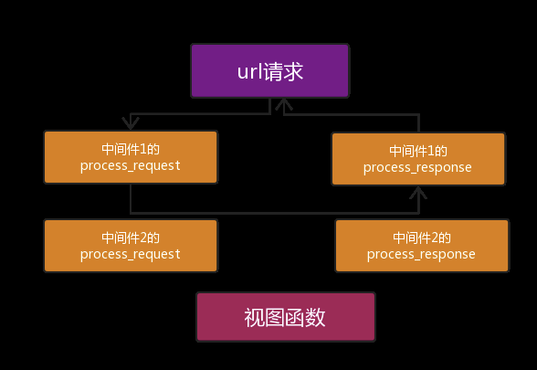

Django中的中间件简介
中间件顾名思义，是介于request与response处理之间的一道处理过程，相对比较轻量级，并且在全局上改变django的输入与输出。因为改变的是全局，所以需要谨慎实用，用不好会影响到性能。
如果你想修改请求，例如被传送到view中的HttpRequest对象， 或者你想修改view返回的HttpResponse对象，你还想在view执行之前做一些操作，这些都可以通过中间件来实现。
说的直白一点中间件是帮助我们在视图函数执行之前和执行之后都可以做一些额外的操作，它本质上就是一个自定义类，类中定义了几个方法，Django框架会在请求的特定的时间去执行这些方法。
打开Django项目的Settings.py文件，看到下面的MIDDLEWARE配置项，django默认自带的一些中间件（7个）：
MIDDLEWARE = [
'django.middleware.security.SecurityMiddleware',
'django.contrib.sessions.middleware.SessionMiddleware',
'django.middleware.common.CommonMiddleware',
'django.middleware.csrf.CsrfViewMiddleware',
'django.contrib.auth.middleware.AuthenticationMiddleware',
'django.contrib.messages.middleware.MessageMiddleware',
'django.middleware.clickjacking.XFrameOptionsMiddleware',
]
MIDDLEWARE配置项是一个列表，列表中是一个个字符串，这些字符串其实是一个个类，也就是一个个中间件。
关于Django内置的中间件，如果有兴趣的话建议大家参考下面这篇文章：
自定义中间件的使用
在项目中创建一个包，随便起名字，一般都放在一个叫做utils的包里面，表示一个公用的组件，创建一个py文件，随便起名字，例如叫做middlewares.py，内容如下：
from django.utils.deprecation import MiddlewareMixin
class MD1(MiddlewareMixin):
#自定义中间件，不是必须要有下面这两个方法，有request方法说明请求来了要处理，有response方法说明响应出去时需要处理，不是非要写这两个方法，
#如果你没写process_response方法，那么会一层一层的往上找，哪个中间件有process_response方法就将返回对象给哪个中间件
def process_request(self, request):
print("MD1里面的 process_request")
def process_response(self, request, response):
print("MD1里面的 process_response")
return response
在settings.py的MIDDLEWARE配置项中注册:
MIDDLEWARE = [
'django.middleware.security.SecurityMiddleware',
'django.contrib.sessions.middleware.SessionMiddleware',
'django.middleware.common.CommonMiddleware',
'django.middleware.csrf.CsrfViewMiddleware',
'django.contrib.auth.middleware.AuthenticationMiddleware',
'django.contrib.messages.middleware.MessageMiddleware',
'django.middleware.clickjacking.XFrameOptionsMiddleware',
# 自定义中间件MD1，这个写的是你项目路径下的一个路径
# 例如，如果你放在项目下，文件夹名成为utils，那么这里应该写utils.middlewares.MD1
'utils.middlewares.MD1',
]
这样的话我们就可以在程序中使用自己定制的中间件实现具体的功能了。
Django中间件的5个方法以及执行顺序介绍
关于Django中间件的5个方法需要大家牢记下面几点：
1、每个方法的触发条件；
2、每个方法在中间件注册顺序下的执行顺序；
3、中间件的注册顺序就是MIDDLEWARE列表各个中间件"字符串"的顺序，规定下标由小到大为顺序。
说明
实际中最常用的是process_request与process_response方法，本篇着重介绍前两个方法，后面的方法大家知道其触发条件与执行顺序即可。
一、process_request方法
请求来的时候过中间件会自动执行的方法
process_request(self,request)
process_request有一个参数，就是request，这个request和视图函数中的request是一样的。
它的返回值可以是None也可以是HttpResponse对象。返回值是None的话，按正常流程继续走，交给下一个中间件处理，如果是HttpResponse对象，Django将不执行视图函数，而将相应对象返回给浏览器。
执行顺序：根据中间件的注册顺序，顺序执行。
process_request方法的一个简单实例
先自定义2个中间件：
from django.utils.deprecation import MiddlewareMixin
class MD1(MiddlewareMixin):
def process_request(self, request):
print("MD1里面的 process_request")
class MD2(MiddlewareMixin):
def process_request(self, request):
print("MD2里面的 process_request")
然后在settings中注册（注册的顺序是MD1在MD2的上面）：
MIDDLEWARE = [
'django.middleware.security.SecurityMiddleware',
'django.contrib.sessions.middleware.SessionMiddleware',
'django.middleware.common.CommonMiddleware',
'django.middleware.csrf.CsrfViewMiddleware',
'django.contrib.auth.middleware.AuthenticationMiddleware',
'django.contrib.messages.middleware.MessageMiddleware',
'django.middleware.clickjacking.XFrameOptionsMiddleware',
'utils.middlewares.MD1', #自定义中间件MD1
'utils.middlewares.MD2' #自定义中间件MD2
]
此时，我们访问一个视图，会发现终端中打印如下内容：
# 先执行完中间件中的process_request方法再执行视图函数中的内容
MD1里面的 process_request
MD2里面的 process_request
app 中的 index视图
二、process_response方法
响应回去会自动执行的方法。
process_response(self, request, response)
它有两个参数，一个是request，一个是response，request就是上述例子中一样的对象，response是视图函数返回的HttpResponse对象。该方法的返回值也必须是HttpResponse对象。
任意一个中间件的process_request方法里面如果出现了return一个HttpResponse对象,那么就会不继续执行其他内容了,而是直接执行各个中间件的process_response方法。
如果自己的中间件里面有process_response这个方法,会先执行它自己的，如果自己的中间件里面有process_response这个方法 返回自己return的内容。
执行顺序：根据中间件的注册顺序，倒序执行。
process_response方法具体代码说明：
from django.utils.deprecation import MiddlewareMixin
class MD1(MiddlewareMixin):
def process_request(self, request):
print("MD1里面的 process_request")
#不必须写return值
#request和response两个参数必须有，名字随便取
def process_response(self, request, response):
print("MD1里面的 process_response")
#print(response.__dict__['_container'][0].decode('utf-8'))
#查看响应体里面的内容的方法，或者直接使用response.content也可以看到响应体里面的内容，
#由于response是个变量，直接点击看源码是看不到的，你打印type(response)发现是HttpResponse对象，
#查看这个对象的源码就知道有什么方法可以用了。
#必须有返回值，写return response ，这个response就像一个接力棒一样
return response
#return HttpResponse('666') ,如果你写了这个，那么你视图返回过来的内容就被它给替代了
class MD2(MiddlewareMixin):
def process_request(self, request):
print("MD2里面的 process_request")
pass
#request和response两个参数必须要有，名字随便取
def process_response(self, request, response):
print("MD2里面的 process_response")
#必须返回response，不然你上层的中间件就没有拿到httpresponse对象，就会报错
return response
访问一个视图，看一下终端的输出：
MD2里面的 process_request
MD1里面的 process_request
app 中的 index视图
MD1里面的 process_response
MD2里面的 process_response
process_request方法与process_response的重要结论
1、中间件的process_request方法是在执行视图函数之前执行的。
2、当配置多个中间件时，会按照MIDDLEWARE中的注册顺序，也就是列表的索引值，从前到后依次执行的。
3、不同中间件之间传递的request都是同一个对象。
4、多个中间件中的process_response方法是按照MIDDLEWARE中的注册顺序倒序执行的，
也就是说第一个中间件的process_request方法首先执行，而它的process_response方法最后执行，
最后一个中间件的process_request方法最后一个执行，它的process_response方法是最先执行。

process_request中断请求的例子
from django.utils.deprecation import MiddlewareMixin
from django.shortcuts import HttpResponse
class Md1(MiddlewareMixin):
def process_request(self,request):
print("Md1请求")
#process_request方法里面不写返回值，默认也是返回None，
#如果你自己写了return None，也是一样的效果，不会中断你的请求，但是如果你return的一个httpresponse对象，
#那么就会在这个方法中断你的请求，直接返回给用户，这就成了非正常的流程了
#并且，如果你在这里return了httpresponse对象，那么会从你这个中间件类中的process_response方法开始执行返回操作，
#所以这个类里面只要有process_response方法，肯定会执行
def process_response(self,request,response):
print("Md1返回")
return response
class Md2(MiddlewareMixin):
def process_request(self,request):
print("Md2请求")
return HttpResponse("Md2中断")
def process_response(self,request,response):
print("Md2返回")
return response
后台打印如下：
Md1请求
Md2请求
Md2返回
Md1返回
简单的session认证的例子
注意，这个新定义的中间件不能注册在session中间件上面！
class M1(MiddlewareMixin):
def process_request(self,request):
#设置路径白名单，只要访问的是login登陆路径，就不做这个cookie认证
if request.path not in [reverse('login'),]:
print('我是M1中间件') #客户端IP地址
# return HttpResponse('sorry,没有通过我的M1中间件')
is_login = request.COOKIES.get('is_login', False)
if is_login:
pass
else:
# return render(request,'login.html')
return redirect(reverse('login'))
else:
return None #别忘了return None，或者直接写个pass
def process_response(self,request,response):
print('M1响应部分')
# print(response.__dict__['_container'][0].decode('utf-8'))
return response
# return HttpResponse('瞎搞')
三、process_view方法
process_view(self, request, view_func, view_args, view_kwargs)
触发条件：url分发之后，视图执行之前执行。
执行顺序：根据注册的顺序，顺序执行。
四、process_exception方法
process_exception(self, request, exception)
触发条件：视图函数报错了会执行。
执行顺序：根据注册的顺序，倒序执行。
五、process_template_response方法
process_template_response(self,request,response)
触发条件：HttpResponse对象里面必须有个render函数才会执行process_template_response方法。
执行顺序：根据注册的顺序，倒序执行。
注意，render函数里面必须return一个HttpResponse对象。
图解中间件的执行流程
1、请求到达中间件之后，先按照正序执行每个注册中间件的process_reques方法，process_request方法返回的值是None，就依次执行，如果返回的值是HttpResponse对象，不再执行后面的process_request方法，而是执行当前对应中间件的process_response方法，将HttpResponse对象返回给浏览器。（也就是说：如果MIDDLEWARE中注册了6个中间件，执行过程中，第3个中间件返回了一个HttpResponse对象，那么第4,5,6中间件的process_request和process_response方法都不执行，顺序执行3,2,1中间件的process_response方法。）

2、process_request方法都执行完后，匹配路由，找到要执行的视图函数，先不执行视图函数，先执行中间件中的process_view方法，process_view方法返回None，继续按顺序执行，所有process_view方法执行完后执行视图函数。（加入中间件3 的process_view方法返回了HttpResponse对象，则4,5,6的process_view以及视图函数都不执行，直接从最后一个中间件，也就是中间件6的process_response方法开始倒序执行。）

3、process_template_response和process_exception两个方法的触发是有条件的，执行顺序也是倒序。总结所有的执行流程如下：